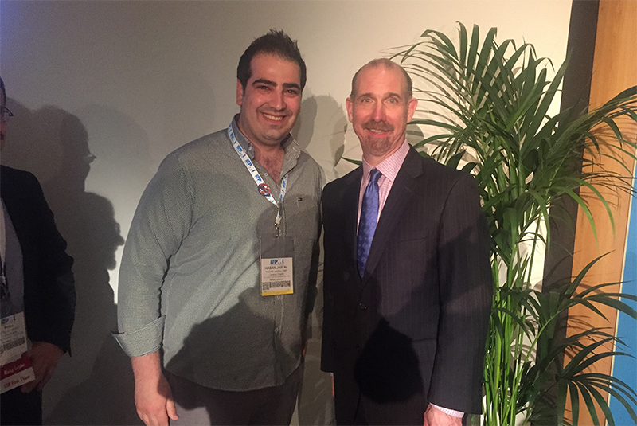
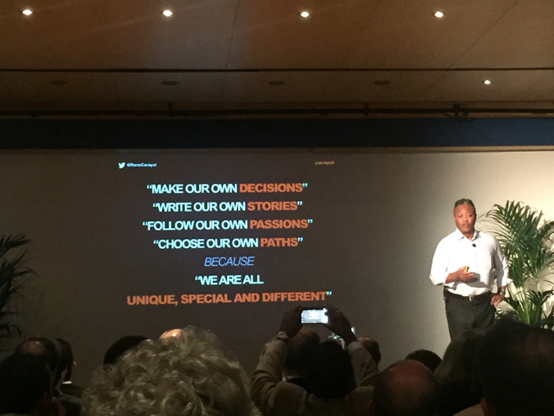
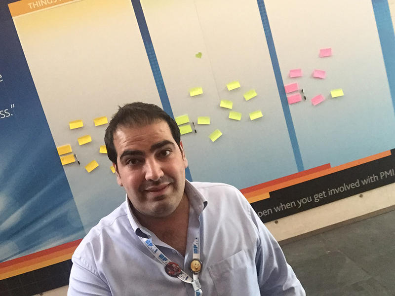
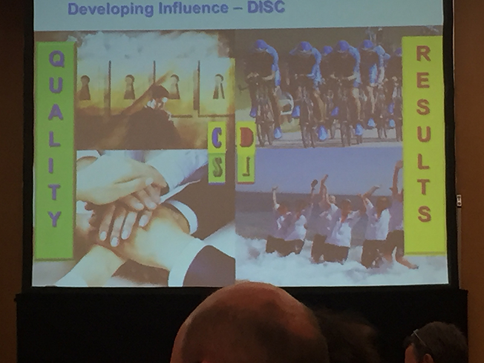
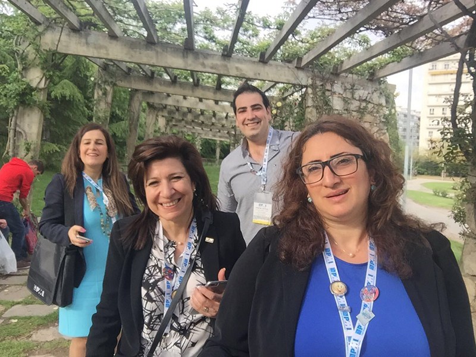
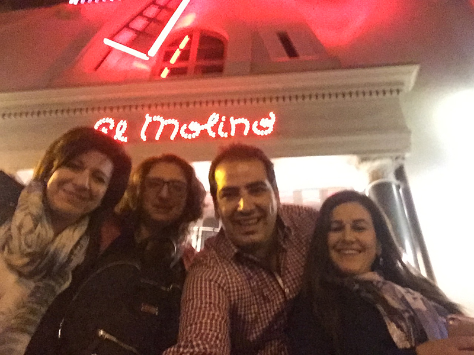
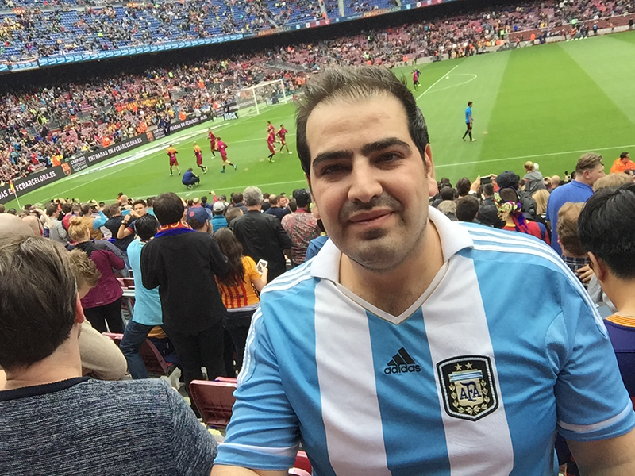
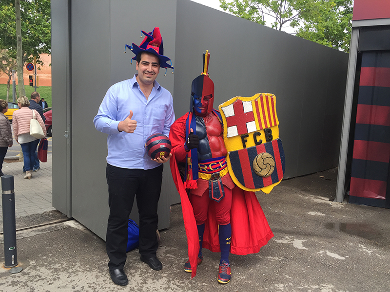

Take Aways from PMI LIM EMEA Barcelona - Leadership Institute Meeting
I am very excited to share with you the passion I had at the PMI EMEA LIM in Barcelona. I am lucky that the PMI Leadership Institute Meeting (LIM) EMEA took place this year in my favorite city.




I will start by the take aways from the LIM sessions and lessons learnt that was hosted in Palau de Congressos de Catalunya in Barcelona :
- The value proposition of the project management as a career is being changed from technical project management skills to leadership and strategic thinking skills.
- With the global growth in Agile methodologies, PMI is emphasizing on the Agile as one of the core project management areas.
- There are a lot of materials that help in the development of the project manager skills that is provided by PMI-ef (Educational Foundation) and has to be better advertised and delivered to the chapters members.
On the other hand, the trip was amazing, Barcelona was beautiful as always, the weather was mostly cloudy and a bit rainy, but that didn't prevent us from exploring the wonderful city. I am sharing with you some photos.



